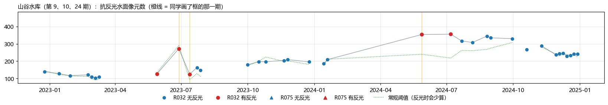
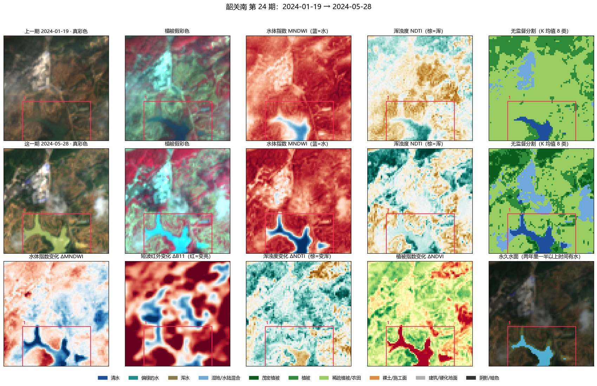
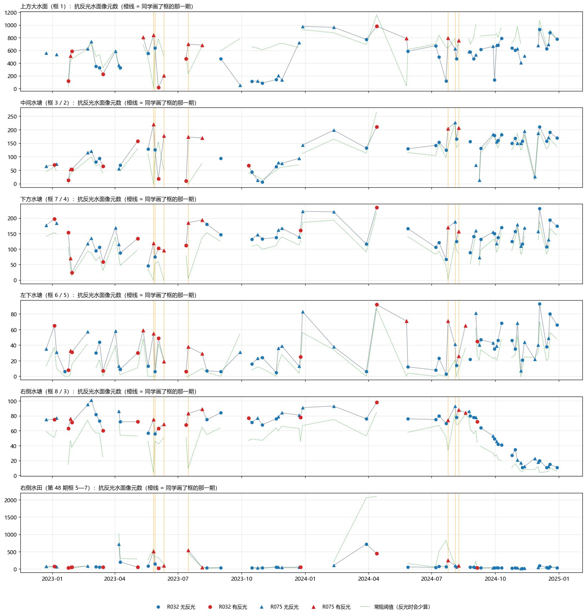

2.2.5 河岸线研究
根据铁路方面的要求补充开展：利用不同季节的影像提取河流水面范围、水边线和断面河宽，区分丰枯水期之间可以恢复的季节涨落与不同年份之间持续存在的岸线变化。与变化检测共用影像整理和配准结果。
前言
遥感影像能直接观测的是成像时刻的水面范围及其与陆地的交界（瞬时水边线）。水边线随水位在滩地上来回移动，断面上的水面宽度也随之涨落，二者都不等同于河岸的地貌边界：同一断面丰枯水期之间的差值多属可以恢复的季节响应，不同年份相近水位下仍然存在的后退，才可能是岸坡侵蚀或河道占用。本专题关注四个问题：水边线在 10 m 和亚米级影像上分别能定位到多准；哪些输入和指数能改善阴影、浑水和湿滩处的判别；如何区分季节涨落与持续的岸线变化；多期影像合成会不会抹平真实的涨落过程。
河岸线标注
- 河段：株洲南（湘江）、韶关南（北江）等有明确河流背景的区段。
- 选期：按枯水期、涨水期、丰水期、退水期各选代表日期，再补充水面明显扩张或收缩前后的观测，统计每个位置的有效观测次数。
- 标注内容：逐期水体范围和当日可见的水边线，单独标出洲滩、湿滩、岸边阴影、桥影、浑水段和有效观测范围；在清晰的参考影像上布设固定断面。规则见 1.4.3 河岸线标注规范。
- 工作台：河岸线标注工作台尚未建设。
初步观察（来自首批判读的复核）
逐期统计水面范围（用不受反光影响的水面判断），再对照拍摄前的降雨，已经能看到几类真实的水面变化：
- 韶关南的山谷水库随降雨涨落：2023 年 6 月（两期之间约 322 mm 降雨）水面从约 127 个像元涨到 272 个，7 月回落；2024 年春季累计约 1,070 mm 降雨后涨到 354 个，并在整个夏秋维持高位。
- 衡阳北上方的大水面：2023 年 10—12 月水面大幅缩小后又恢复，可能是放水或秋旱。
- 衡阳北右侧水塘：2024 年 8—12 月水面持续缩小。
后两类是缓慢的变化，逐期两两对比时不容易发现，时间序列更合适。



降雨取自 Open-Meteo 历史天气接口（ERA5 再分析资料，分辨率较粗，可能漏掉局地阵雨）。
后续复核与尚未落地的量测（2026-10-06）
水色变化与水面范围变化已分开复核，旧个别“上涨/露底”判断被撤回；清楚时相、反光、洪水与稻田灌水须逐对象核查。已有水边逼近铁路的历史回查，但每期水距表和阈值提醒尚未形成自动监测。河岸线独立标注台与完整断面参考仍需建设，不能将高分形态辅助或AI看图当作同日米级精度验收。
研究步骤
- 选区与选期选定河段和四季日期，统计有效观测次数。
- 标注逐期水体与水边线，洲滩、湿滩、阴影、桥影、浑水段和有效观测范围；有高分影像的区段制作精细参考。
- 方法对照指数阈值（NDWI、MNDWI、AWEI、SWI，浑水段加入 NDTI）、公开模型直接推理（STURM-Flood、ML4Floods）、本地标签微调；单期与短时间窗多期合成对照；枯水期定阈值或训练、丰水期直接测试，再反向测试。
- 量测与变化分析在清晰影像上固定断面，逐期计算河宽；有洲岛的河段同时记录各水道宽度之和与最外侧水边线跨度；按 DSAS 方法计算岸线变化速率及置信区间。
- 评价与产出水体 IoU、水边线距离误差（中位数和 95% 分位数）、断面河宽偏差；高精度岸线提取对比、指数与输入对照、跨季节泛化结果、季节性与持续性变化分区图。
方法与资源
| 方法或资源 | 在本项目中的用途 |
|---|---|
| NDWI、MNDWI、AWEI | 指数阈值参照，分析阴影、湿滩与建成区的混淆 |
| NDTI、SWI | 处理丰水期高浊度水体（韶关南丰水期为高浊度水体） |
| STURM-Flood、ML4Floods | 直接推理，得到本地初始结果 |
| S1S2-Water | 补充训练数据与跨地区验证 |
| RiverScope | 借鉴分割、边界与河宽的联合评价 |
| SuperRivolution | 比较单期与多期合成对真实涨落的保留 |
| RivWidthCloud、DSAS | 固定断面量测河宽与岸线变化速率 |
| 河流—洲滩分类与月度合成 | 判断河边裸地是洲滩出露还是施工扰动 |
注意：雨季云量大，可用的晴空影像往往偏向低水位时期，基于光学影像的季节统计要考虑这种观测偏差；Sentinel-2 短波红外原始分辨率是 20 m，窄分汊处会有混合像元。
代码与数据
- extent_series.py水面范围时间序列（常规阈值与抗反光判断）